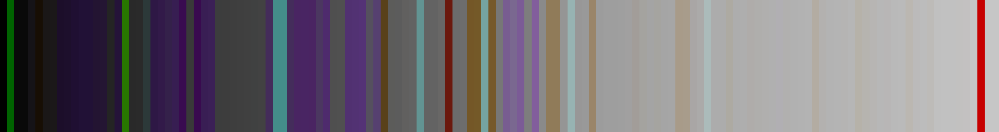
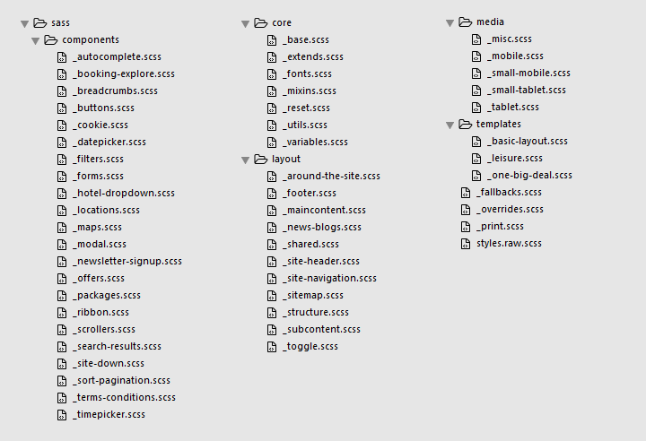
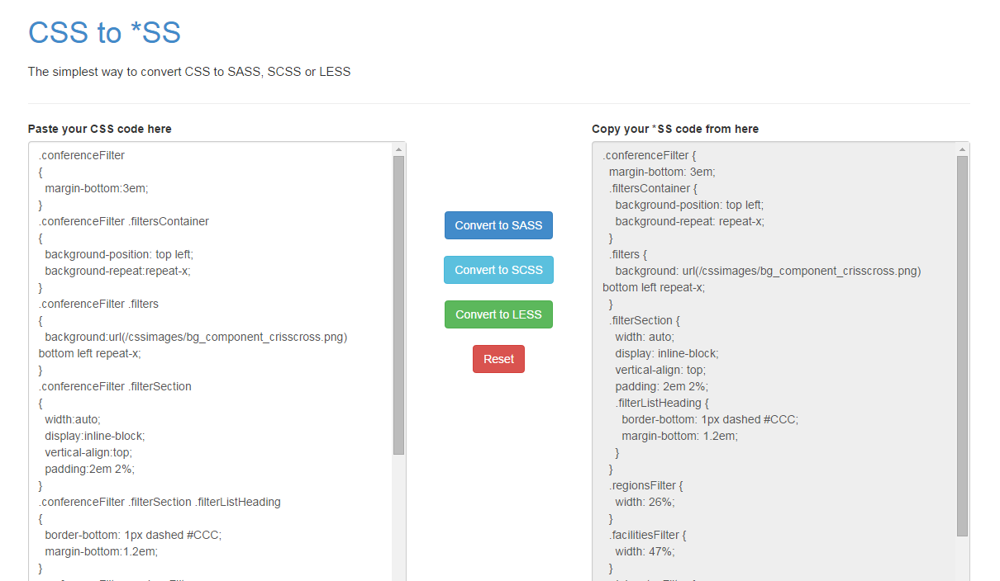
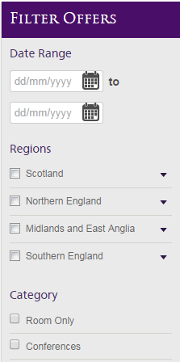
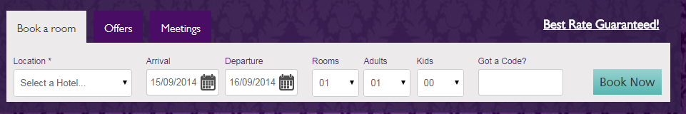
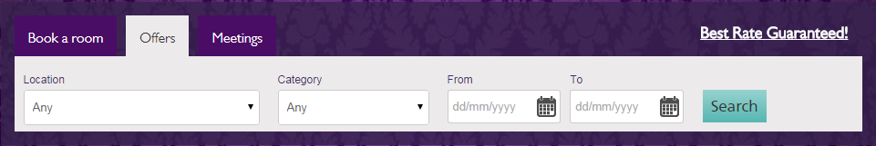
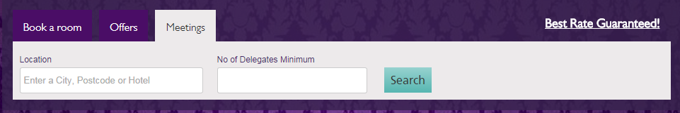
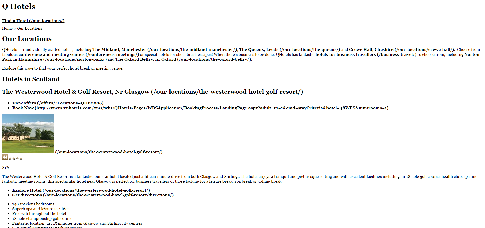

❤

The Challenge
Convert 10,764 lines of CSS in eqtr_styles.less to Sass
Why Would You Want To Do A Thing Like That?
Fun- Size
- Manageability
- Future-proofing
- Sanity
Where Do You Start?
- Replace colours and fonts
- Separate files
- Nest rules
- Combine rules
- Add extends and includes
Where Do You Start?
- Build process
- Replace colours and fonts
- Separate files
- Nest rules
- Combine rules
- Add extends and includes
Build Process
Of course.
Variables - Fonts
Find and Replace
$font-base:Arial, Tahoma, Helvetica, sans-serif;
$font-sans: "Gill Sans MT", "CartoGothicStdBook", Arial, Tahoma, Helvetica, sans-serif;
$font-sans-condensed: "Gill Sans MT Condensed Bold", "CartoGothicStdBook", Arial, Tahoma, Helvetica, sans-serif;
$font-sans-condensed-alt: "GillSansW04-BoldCondens", "CartoGothicStdBold", Arial, Tahoma, Helvetica, sans-serif;
$font-sans-bold:"Gill Sans MT Bold", "CartoGothicStdBook", Arial, Tahoma, Helvetica, sans-serif;
$font-sans-book: "Gill Sans W04 Book", Arial, sans-serif;
$font-title:"Trajan Pro 1167363", Arial, sans-serif;
Variables - Colours
Thanks, Alex! https://github.com/SlexAxton/css-colorguard
npm install colorguard
colorguard --file eqtr_style.less --format json
Variables - Colour Results
138 unique colours
Variables - Colour Results
138 unique colours
113 colours only used once
Variables - Colour Results
138 unique colours
113 colours only used once
51 Shades of Grey
Variables - Colour Swatch
Variables - Colour Swatch
.downloadDropdown .error
{
color:Red;
/* TO DO */
}Variables - Colour Maps
NEW! in Sass 3.3
$icons: (
tiny: 10px,
small: 15px,
medium: 20px,
large: 40px,
huge: 50px
);map-get($icons, small);@each $name, $size in $icons {
.icon-#{$name} {
width:$size;
height:$size;
}
}Palettes
$palettes: (
purple: (
dark: #2F1B42, // (7) dark purple
base: #47276A, // (46) purple
light: #490E67, // (11) lighter purple
light2: #4A0D66 // (13) lighter purple
),
blue: (
base: #57B6B1, // (10) blue
light: #97D2CF // (10) light blue
),
... other colours here
);Palettes
map-get(map-get($palettes, purple), light);@function palette($palette, $tone: 'base') {
@return map-get(map-get($palettes, $palette), $tone);
}h1, h2, h3 {
font-family: $font-title;
color: palette(purple);
}
h4, h5, h6 {
color: palette(purple, light);
}Splitting the File
/* File: eqtr_style.css
Main Authors: Sean Jones & Bryan Kerr @ Equator
INDEX
------------------
0. Reset
1. Basic Semantics
2. Template
3. Forms
4. Dynamic Controls
5. Components
CSS3 Enhancements
Web Fonts
Media Queries
Print Styles */
Sass Structure
Nesting
Extend and Combine

%defaultFilter {
margin-bottom: 3em;
.filtersContainer {
background-position: top left;
background-repeat: repeat-x;
}
.filters {
background: url(/cssimages/bg_component_crisscross.png) bottom left repeat-x;
}
...Extend and Combine



Well that went OK...
Well that went OK...
What would I do differently?
Get to know the site better
What would I do differently?
Get to know the site better
Go through site with designer
What would I do differently?
Get to know the site better
Go through site with designer
Make decisions about build